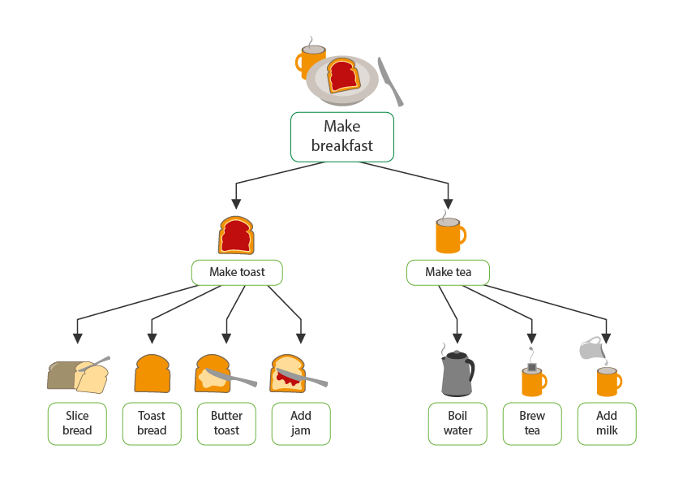
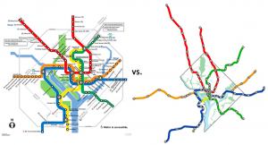

DECOMPOSITION

Decomposition is the process of breaking a problem into smaller, more manageable sub-problems.
Where:
- each sub-problem accomplishes a different task
- each of the sub-problems are contained so they can be solved independently and are unaffected the other sub-problems.
ABSTRACTION

Abstraction is the process of removing unecessary information from a problem to make it easier to solve.
- For example, going from high level computer langauges to low level: High level > Assembly Language > Machine Code.
ALGORITHMIC THINKING
Algorithmic Thinking is a person's ability to think logically when getting from a problem to a solution.
For example:
- Understanding the logical steps are required to reach a solution.
- Improving an algorithm's efficiency when designing one.